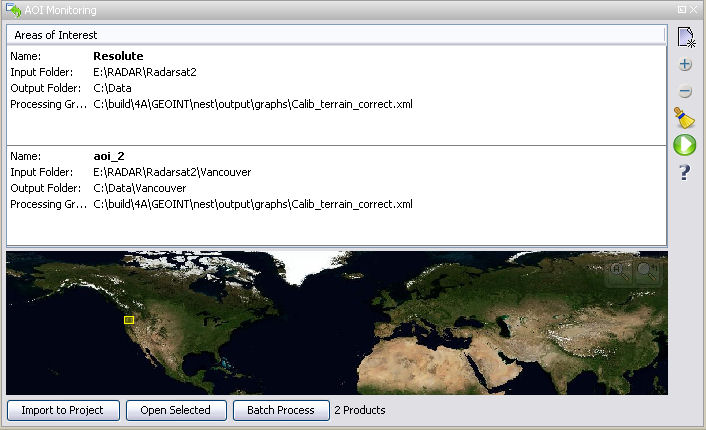

| AOI Monitoring | |
The Area Of Interests (AOI)
Monitoring allows users to specify, save, and load AOIs to be
automatically batched processed using a chain of processing steps
defined with the Graph Builder.
AOIs can be specified graphically by drawing polygons on the world map. AOIs can be saved and reloaded without requiring the user to re-enter any parameters.
You may also specify which types of products to use based on the fields in the metadata database. Thereby, the user can specify to only process for example Radarasat 2 SLC products from a specific date forward etc.
The user must specify the input folder where to scan recursively for new products, the output folder where to save the processed results, the processing graph and the scheduled time to begin scanning and processing.

The software then queries the Product Library database of product metadata to determine which local stored products partially or entirely fall within the AOI and selects the best appropriate image pairs based on geolocation, product type, pass, resolution, acquisition time and baseline.
When new products are found by the system that are covered in whole or partially by an AOI, the system will trigger the processing chain for that AOI to be queued for processing.
There is no limit to the number of AOIs that can be defined for monitoring. Processing for multiple AOIs will be queued.